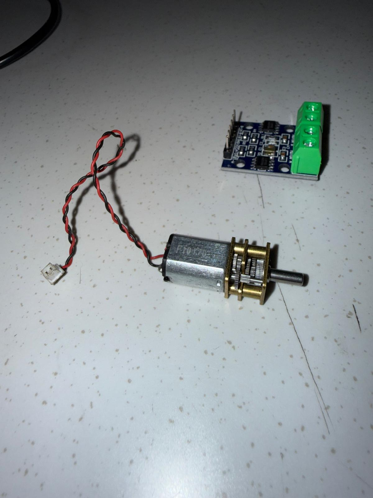
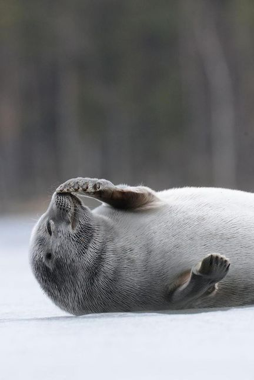
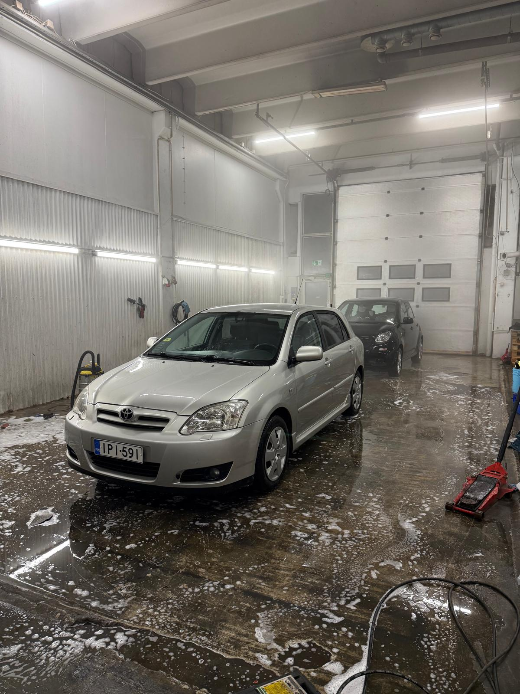
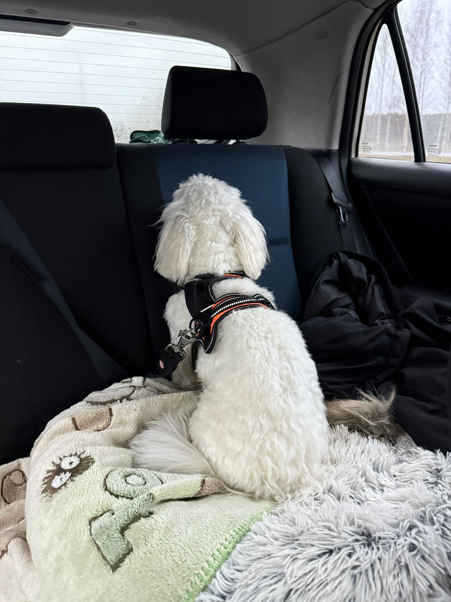

Personal projects
FluPo robot
FluPo robot is a gadget inspired by a vision of a mascot for the hyhdraulic laboratory of Aalto. FluPo embodies the essense of a benign seal hat barely manages to make its way around. The FluPo idea is a work in progress, and will hopefully gain attention and support amongst the Mechatronics research group in Aalto.
FluPo runs an esp32, two N20 Dc motors, L9110S Dual Channel H-Bridge Motor Driver module, and a 1S-lipo. The robot is remotely controller over wifi utilizing ROS2 and controlled using xbox controller.
FluPo media



Rolling a bolder up a hill
Owning a vehicle is fun, and its even more fun when you get to practive mechanic skills to maintain its ability to function. Over the years of owning the car a lot has happened: driveshafts have snapped in half and metal has slowly rusted away... IPI given many a chance to learn by doing.
Corolla never dies

